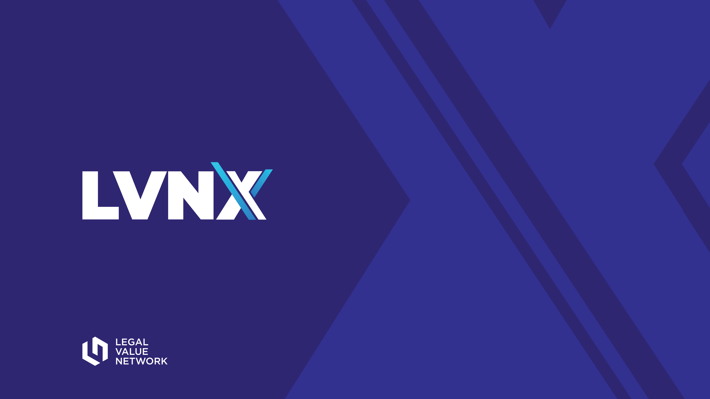

Board working session · 2026–2027
LVN Strategy & Operating Model
A consolidated plan for governance, participation, and value exchange.
Built from the March 2026 Board Vision and the Restructuring Proposal.

Working file
Use it to present, decide, and operate
Present
Move cleanly
Arrow keys, clickable controls, touch swipe, direct slide links, and full screen.
Trace
Know the origin
Every slide is tagged as source plan, restructuring, synthesis, or board decision.
Edit
Work in the file
Dotted fields are editable. Changes stay in this browser until cleared.
Export
Carry work forward
Print the deck or export the editable fields as a Markdown action file.

The combined thesis
The two decks form one operating chain
Strategy
Three focus areas define where LVN is going.
Structure
Board, staff, committees, and subcommittees divide the work.
Communities
SIGs and the C-Suite Council create year-round signal and content.
Participation
Members, volunteers, partners, and sponsors enter through clear lanes.
Proof
Outputs, measures, and renewal decisions show whether the exchange works.
Strategic plan
North star and guardrails
LVN will elevate the value it provides to LPM, Practice Management, and Pricing professionals, add C-level members from existing disciplines, and expand into Innovation & AI and Law Firm Growth.
Guiding principles
- Member-led
- High-trust, peer-driven experiences
- Relevant, function-specific content
- Useful from entry level through C-suite
- Responsive to the evolving legal market
- Open to aligned partnerships
Strategic plan
Three focus areas, in sequence
Strengthen the core
Improve value delivery, run LVNx 2026, grow membership, recruit C-suite members, and build the next leadership bench.
Define the expansion
Clarify the audience, value proposition, content, and experiences for Innovation & AI and Law Firm Growth.
Acquire and integrate
Build partnerships, recruit leaders, adjust advisory structures, and launch membership and sponsor campaigns.
Strategic sequence
Move from structure to scale
Now → LVNx 2026
- Approve target model
- Membership drive
- Recruit emerging leaders
- Align founding sponsors
Q4 2026
- Launch committee and SIG leadership
- Onboard volunteers
- Begin C-suite campaign
- Start monthly cadence
H1 2027
- Operate the new structure
- Develop expanded-audience content
- Run partner pilots
- Build proof points
H2 2027
- Communicate expansion
- Membership and sponsor drive 2.0
- Recruit expanded-audience executives
- Review and renew charters
Restructuring proposal
Three symptoms point to three missing capabilities
Content drought
Too much time between useful member experiences.
Build a year-round content engine
SIGs, Education, Programming, and staff work from one portfolio and cadence.
No leadership bench
The Board has no reliable pipeline of prepared successors.
Create a visible service ladder
Members move from scoped contribution to team leadership, committee work, and Board readiness.
Low community engagement
Volunteer opportunities and expected outcomes are unclear.
Offer multiple participation lanes
Every lane states the commitment, benefit, output, owner, and renewal test.
Resource constraint
The first version must be light enough to run
FY26 strategic initiatives allocation
Set aside for 501(c)(6) and legal filing work
Dedicated restructuring budget in the original FY26 plan
Board must set
- A single staff operating owner
- Expected staff hours per month
- A spend ceiling and approval rule
- The minimum viable launch scope
- Which work pauses to make room
Recommended design
Six rules for a volunteer-led system
Board governs
Staff coordinates. Volunteer groups produce.
Every group has a contract
Charter, owner, outputs, measures, and a review date.
One intake
Ideas do not become side projects through private channels.
Authority matches risk
Routine delivery stays out of the Board agenda.
The exchange is explicit
People know what they give, get, and prove.
Nothing is permanent by default
Charters, roles, and programs renew on evidence.
Target architecture
One Board, one operating layer, clear delivery groups
portfolio, cadence, enablement
strategy, budget, governance, risk
define, merge, or retire
placement decision
Conference subcommittees
Education engine
Membership subcommittee
advisory insight loop
Day-to-day operating model
Put decisions at the lowest responsible layer
| Layer | Owns | Does not own | Reporting |
|---|---|---|---|
| Board | Strategy, budget, bylaws, risk, appointments, charter approval | Routine delivery, meeting logistics, ordinary content choices | Quarterly |
| Staff / operations | Portfolio, calendar, intake, vendors, communications, dashboard | Unilateral strategy changes or unapproved material spend | Monthly packet |
| Standing committees | Chartered outputs, recommendations, delivery oversight | Work outside charter or cross-portfolio commitments | Monthly |
| SIGs | Community, subject signal, content proposals, peer activity | Governance, sponsor promises, LVN policy | Monthly via Steering |
| Councils / advisors | Executive insight, external signal, peer exchange | Binding decisions or editorial control | Quarterly insight |
Management rhythm
Run one cadence across every group
Staff triage
Intake, dependencies, capacity, risks, and next actions.
Committees
Review charter outputs, blockers, spend, and member proof.
SIGs + Steering
Community signal, content pipeline, handoffs, and leadership health.
Board
Strategy, dashboard, exceptions, investment, and appointments.
Portfolio reset
Renew, merge, pause, or close groups and programs.
Work management
One path from signal to proof
1. Signal
Member need, SIG insight, council issue, partner idea, or sponsor opportunity.
2. Brief
Problem, audience, outcome, owner, effort, cost, and measure.
3. Triage
Staff tests fit, capacity, conflicts, and dependencies.
4. Assign
A committee or staff owner receives the work and decision rights.
5. Deliver
Small team executes against a visible milestone.
6. Prove
Measure use and quality. Renew, adapt, or stop.
Participation architecture
Bring people in through a named lane
Member
Learn, connect, share needs, and use the community.
Entry: membership + onboarding
Volunteer
Own a defined output or help lead a community.
Entry: year-round form + fit conversation
Partner
Contribute reach, capability, expertise, or a shared platform.
Entry: scoped partner brief
Sponsor
Fund work and participate within written benefit and editorial guardrails.
Entry: package + fulfillment plan
C-Suite Council member
Bring executive signal, candor, and cross-sector perspective to a confidential peer forum. This is an advisory lane, not a governance shortcut.
Entry: invitation + selection criteria
Value exchange
Make the return visible on both sides
| Lane | LVN provides | Participant provides | Proof the exchange works |
|---|---|---|---|
| Member | Practical content, trusted peers, access to contribute | Dues, time, participation, useful signal | Activation, retention, useful connections, content use |
| Volunteer | Defined role, leadership reps, recognition, network | Time, delivery, collaboration, succession support | Role fill, milestone completion, satisfaction, advancement |
| Partner | Shared platform, credibility, community connection | Reach, expertise, capability, co-investment | Joint output, qualified reach, repeat collaboration |
| Sponsor | Written benefits, visibility, access within policy | Funding, expertise, promotion, fulfillment inputs | Benefit delivery, member trust, renewal, program result |
| C-suite | Confidential peer forum and voice into priorities | Candor, time, strategic insight, relationships | Participation, useful recommendations, action taken |
Leadership pipeline
Turn volunteering into a visible service ladder
Discover
See current needs and role expectations.
Fit
Rank interests. Match skill, capacity, and need.
Onboard
Charter, tools, first 90 days, and named support.
Contribute
Own a small, visible output before a larger role.
Lead
Chair a team, run meetings, and develop successors.
Rotate
Handoff, recognition, next role, or clean exit.
1–2 hours / month
3–5 hours / month
5–8 hours / month
Proposed planning assumptions. Confirm with volunteers before publishing.
Year-round content engine
Give each SIG the same operating contract
AI & Innovation
Technology, AI, automation, data, adoption, and responsible governance.
Legal Project Management
Planning, matter delivery, project methods, tools, and team leadership.
Practice Management
Operations, resources, workflow, governance, talent, and service delivery.
Pricing
Pricing, profitability, AFAs, budgeting, analytics, and client value.
Proposed output floor
- One member learning session each quarter
- One reusable artifact each quarter
- One member-signal brief each half
- LVNx programming inputs on the conference cycle
Standing committees
Define each committee by its output
Conference
Integrated LVNx plan and attendee experience.
Proof: attendance, engagement, feedback
Education
Year-round learning portfolio and SIG enablement.
Proof: output cadence, use, quality
Finance
Budget, forecast, reserves, liquidity, and policy oversight.
Proof: variance, cash, reporting
Membership
Acquisition, onboarding, activation, and retention.
Proof: growth, activation, renewal
Sponsorship & Partnerships
Relationship portfolio, packages, fulfillment, and renewal.
Proof: revenue, delivery, trust
WIN
Advancement, connection, content, and community for women.
Decision: standing committee, SIG, or program?
Replace the Council of Luminaries
Build a Council with a job to do
Purpose
- Confidential executive peer exchange
- Signal on market and operating priorities
- Cross-sector relationships
- Strategic insight for LVN
Membership
- Senior law-firm and corporate leaders
- ALSP, legal technology, consulting, and aligned partners
- Defined selection criteria
- Balanced representation
Operating contract
- Four curated touchpoints / year
- Confidentiality norms
- Annual insight memo
- No governance authority
- Annual renewal
Membership expansion
Expand through communities before titles
Core communities
- Legal Project Management
- Practice Management
- Pricing
Goal: deepen value and increase AmLaw 200 participation.
Innovation & AI pilot
- Innovation and technology leaders
- Data, analytics, and transformation roles
- Practical AI governance and adoption
- Connection to legal operations problems
Entry: SIG, content, peer forums, then leadership.
Law Firm Growth pilot
- Revenue, growth, and client-value leaders
- Business development and client experience
- Growth through pricing, operations, and service
- Cross-functional C-suite connection
Entry: targeted programs, partnerships, and Council.
External participation
Separate partnership from sponsorship
Community partner
Give: audience reach and reciprocal access.
Get: useful participation and shared visibility.
Knowledge partner
Give: expertise, data, research, or facilitation.
Get: attribution and community learning.
Program sponsor
Give: funding and fulfillment inputs for a named program.
Get: written benefits tied to that program.
Strategic sponsor
Give: annual support across a portfolio.
Get: planned, multi-touch benefits and review.
Phased implementation
Launch the minimum viable operating model
Now → Aug
- Close architecture decisions
- Name staff owner
- Confirm capacity and spend
- Open volunteer recruitment
LVNx · Sep 16–18
- Recruit SIG members
- Introduce Council
- Listen to member needs
- Brief sponsors and partners
October
- Select leaders
- Finalize charters
- Run onboarding
- Publish calendar
Nov → Jan
- Begin terms
- Start monthly cadence
- Deliver first outputs
- Baseline metrics
2027
- Run audience pilots
- Expand partnerships
- Build leadership bench
- Review and renew
Editable workbench
Measure whether the model is earning its keep
| Outcome | Measure | Baseline | 2027 target | Owner | Review |
|---|---|---|---|---|---|
| Member activation | % with two meaningful actions / quarter | Quarterly | |||
| Content cadence | Member-facing outputs / month | Monthly | |||
| Volunteer health | Roles filled + 90-day retention | Monthly | |||
| Leadership bench | Ready-now successors for key roles | Quarterly | |||
| Partner / sponsor value | Fulfillment + renewal + member trust | Quarterly | |||
| Financial discipline | Spend and staff time vs approved plan | Monthly |
Editable workbench
Decisions to close before launch
Approve target architecture
Board, staff, six standing groups, substructures, SIGs, and Council.
Owner: · By:
Resolve advisory bodies
Define, merge, or retire the Advisory Board. Confirm the C-Suite Council boundary.
Owner: · By:
Name governance ownership
Assign nominations, bylaws, succession, and annual charter review.
Owner: · By:
Approve SIG terms and liaisons
Resolve leadership terms, Steering composition, and Board reporting.
Owner: · By:
Confirm capacity and spend
Name the staff owner, monthly capacity, launch scope, and spend ceiling.
Owner: · By:
Approve value exchange and proof
Set participation promises, sponsor guardrails, and the scorecard.
Owner: · By:
Editable workbench
Translate the model into owned work
| Deliverable | Accountable role | Target | Proof complete |
|---|---|---|---|
| Ratified architecture + decision rights | Board Chair | Pre-LVNx | Recorded Board decision + published chart |
| Four SIG charters + minimum viable teams | Education Chairs | October | Signed charters, leaders, calendar, first outputs |
| Volunteer intake + onboarding | Membership + Staff | October | Live form, role menu, onboarding pack, response SLA |
| Partner and sponsor lane definitions | Sponsorship Chair | Pre-LVNx | Approved packages, guardrails, fulfillment owners |
| Resource plan + reporting rule | Finance + Staff | August | Spend cap, capacity plan, monthly variance view |
| Monthly operating packet + scorecard | Staff Lead | November | First packet issued with baselines and actions |
Every field in the table is editable and saved locally.
Source reconciliation
The decks do not settle these points
Advisory Board
The proposed chart marks it with a question. Its unique purpose is not defined.
Programming
It appears as a standing committee and as a Conference subcommittee.
SIG leadership terms
One slide says 1–2 years. Another specifies a 2-year Chair term.
Board liaison
The source alternates between a Board liaison and a selected SIG Chair liaison.
Education ownership
Year-round content, conference programming, and SIG content need one handoff model.
Implementation phases
Phases 6 and 7 are out of order, and Phase 6 repeats the implementation action.
Council naming
“C-Suite Leadership Council” and “Legal Industry Executive Exchange” appear together.
Governance ownership
The strategic plan calls for a framework, but no body clearly owns it.
The design test
Every person should answer four questions
If the answers are not clear, the lane is not ready to launch.